Mercedes W124
Der W124er Mercedes als Oldtimer.
Solide Technik - W124er ein ideales Fahrzeug, um in die H-Kennzeichen Liga zu starten.
Wer Spaß an solchen Fahrzeugen hat, schätzt die unkomplizierte und fast von jedermann beherrschbare Konstruktion des Wagens, die gute Ersatzteilversorgung und die günstigen Preise für notwendigen Ersatz.
124er kann man für kleines Geld kaufen - sagen wir mal ab 500 Euro ... für eine Rostlaube. Man kann aber auch locker über 8000-16000 Euro für 4- und 6-Zylinder Modell ausgeben. Wenn man einen guten V8 haben möchte, muss man heute schon mit Preisen rechnen, die ab 15.000 Euro los gehen. Für einen guten 500er sollte man sicher ein Vielfaches davon einstecken haben.
Vorsicht ist geboten, wenn es sich um ein Fahrzeug handelt, welches aus der letzten Serie stammt. MOPF2 (Modellpflege 2 - zu erkennen an der abgerundeten Motorhaube) rostet gerne und häufig - auch schon mal ganz versteckt... Beim 124er gilt: je älter, desto besser und optimal erwischt haben Sie es, wenn Sie einen frühen "Vormopf" finden, der rostfrei ist und eine geringe, scheckheftgepflegte Kilometerleistung aufweist.
Die Motorisierung ist nicht ganz so wichtig (V8 aber "nice to have"). Aber "Original" muss es sein, mit möglichst wenig Ausstattung, damit auch möglichst wenig kaputt geht und schon ist man dabei.
Mai 2020
Und wieder ist es ein Zufall, der mich auf einen 400E aufmerksam werden lässt.
Ein Sammler 4-rädrigen Kulturgutes beschließt ein paar seiner Schätze zu Geld zu machen, weil er das Haus seines Schwiegervaters umbauen lassen möchte. Der Liebhaber kennt meine Sammelleidenschaft, abgeleitet von meiner Internetseite Seite, die er im Netz gefunden hat und fragt an, ob ich interessiert bin. 3 Fahrzeuge stehen zur Disposition - dabei ein 400E.
Ich setze mich spontan ins Auto und schaue mir den Boliden an. Der Weg an den Bodensee ist zu "Coronazeiten" schon eine weite Reise, aber was tut man nicht alles...
Als ich ankomme, stehe ich auf einem Gelände mit unzähligen Garagen und einer Halle mit Hebebühnen und Gruben. In jeder Ecke ein Oldi - allesamt in Bestzustand, manche im "Reparaturmodus", andere abgedeckt, um sie vor fremden Blicken zu schützen. Einige sind Kundenfahrzeuge, andere einfach nur Eigentum des Sammlers. Er betreibt eine kleine Werkstatt - seine Kunden allesamt Young- und Oldtimer-Besitzer. Schön, dass es Menschen gibt, die sich solcher Wagen annehmen und die ihr Wissen um alte Technik in dieser Weise nutzen. Hier bin ich richtig.
Roby G. zeigt mir seine Seltenheiten: 108er, 115er, 123er, 124er, Baby-Benz, Limos, Kombis, Coupes, alles dabei - alles TOP - Klasse. Hier ein alter Jaguar und da ein Spitfire, hinten dran ein 280SE 3,5 Liter in Topzustand ... - ich werde richtig neidisch...
In einer der Garage steht, abgedeckt mit einem Indoor-Cover, ein 400E in schwarz metallic (199). Der Wagen ist seit 2005 im Besitz von Roby G. Er hat ihn gekauft, niemals angemeldet und seit 15 Jahren in jedem Jahr nur inspiziert, mit roten Nummern bewegt, hin und wieder Öle gewechselt und das gemacht, was ein M119 mit 200000km braucht: Gleitschienen gewechselt und die Kette erneuert. Die Reparatur war eine reine Vorsichtsmaßnahme. gealterte Öle wurden ebenso gewechselt, wie die gealterten Reifen, die 2019 erneuert wurden. Das Schiebedach bekam neue Hubwinkel und gerade wurde eine neue Batterie eingesetzt. So kamen mit den Jahren stolze 3500 Kilometer zusammen.
Die Besitzer:
Der Wagen wurde am 24.8.1993 auf die Mercedes Benz AG in Stuttgart angemeldet. am 9.7.1995 kauft Eckbert D (Jahrgang 66). aus Heilbronn das Fahrzeug. Er fährt es bis zum 20.10.2004 - an diesem Tag kauft die Rentnerin Ute L (Jahrgang 44) den Wagen. Sie kommt wohl mit der Technik nicht klar ... und gibt den Wagen in die Hände des oben erwähnten Sammlers und Liebhabers Roby G., der ihn 15 Jahre unangemeldet in seiner Sammlung hält.
Eine reichhaltige Ausstattung hatte der V8 schon ab Werk (elektrische Sitze, Tempomat, Automatic). Dem Erstbesitzer war das alleine nicht ausreichend und er komplettierte den Wagen mit Zubehör im Gesamtwert von 27128 DM. Der Wagen hat damit im Juni 1993 immerhin einen Rechnungspreis von etwa 124.000 DM.
Zustand 2

Schön steht er da.... mit ordentlicher Ausstattung und als "Sportline" eine Ausnahmeerscheinung unter den 3500 Stck. gebauten echten, deutschen 400ern.
Man weiß, dass Mercedes den 400E zunächst nur für den Exportmarkt (USA / Japan) geplant hat. In Deutschland wurde der Wagen zuerst nicht angeboten.
1993 erschien mit der Modellpflege der E420. Man hat ihm ein paar größere Bremsen verpasst und 16 Zoll Felgen verbaut.
In der Übergangszeit (manche nennen ihn Mopf 1,5) wurde die neuere Technik in noch vorhandenen Mopf1 Karosserien verbaut. Auch hier gab es bereits die größeren Bremsen und 16 Zoll statt 15 Zoll Felgen. Bekanntlich hatten der 400er und der E420 identische Motoren (M119). Diesen Wagen konnte man schon in Deutschland kaufen - mit der alten Karosserie.
Das hier ist einer davon, selten genug - und dann noch mit Sportline Ausstattung. Ich werde versuchen bei Mercedes heraus zu finden, wieviel dieser 400E als Sportline für den deutschen Markt vom Band gelaufen sind. Es waren sicher keine 300 Stück. Wieviele 400E sind davon sind heute noch zugelassen? Sicher keine 100 Stck mehr. Einer davon steht jetzt in meiner Garage.
Ein Probelauf

ein echter deutscher 400E mit "Sportline" ab Werk
Nach 15 Jahren Schlüssel rein rumdrehen und los geht's
Die 8 Zylinder sind alle (fast) gleichzeitig am Start und der Wagen läuft fast ruhig. Er ist kalt, läuft, wie es sein soll, im Kaltlauf mit etwas erhöhtem Leerlauf.
Der Rückwärtsgang gleitet langsam an seine Position und nach Lösen der Bremse rollen wir rückwärts aus der Garage. Wechsel in den Vorwärtsgang (ohne Rucken) - kurzer Schub nach vorne, anhalten, Feststellbremse und bei laufendem Motor ein Blick unter die Haube.
Kein ungewollter Ölaustritt - alles dicht. Alle verbauten Extras funktionieren. Laut Roby G. sind selbst die Hubwinkel des Schiebedachs erneuert worden. Klima, Elektrische Sitzverstellung, auf der Fahrerseite sogar mit Memory (Extra), Soundsystem 810 (damals richtig teuer), Schiebehebedach, elektrischer Heckrollo, 4 Fensterheber - alles mal schnell getestet - alles einwandfrei.
Mittlerweile hat der Motor Betriebstemperatur und den Leerlauf auf 600 Umdrehungen. Kurze Gasstöße bestätigen den sauberen Klang des Motors. Fremdgeräusche gibt es keine (Hydros, Kette, etc - alles gut). Hier und da ein Aussetzer... könnte ein ausgetrockneter Kabelbaum sein (nun, der wird ohnehin gewechselt).
Obwohl eine Bühne zur Verfügung stünde, verzichte ich auf die Ansicht des Wagens von unten. Ein kurzer Blick unter den Wagen zeigt auch von unten nichts Schlechtes - ein leicht schwitzendes Differenzial ist normal. Ich nehme auf dem Sportline Leder platz und fahre auf dem großen Hof eine Runde, schalte mit dem Sportline-Lederschaltknauf ein paar Mal die Gänge durch - das genügt mir.
Der Wagen hat seit 15 Jahren keine TÜV gesehen. Ich frage Roby G. ob er etwas dagegen hat, den Wagen beim TÜV vorzufahren. Zum Einen möchte ich den als Daily Driver nutzen, zum Anderen würde eine "Mängelliste" - ausgestellt vom TÜV - ein guter Indikator für notwendige Investitionen sein.
Roby G. stimmt wie selbstverständlich zu und wir verbleiben so, dass ich den Wagen kaufe, sobald der TÜV Bericht vorliegt. Den Preis handeln wir auf dieser Basis aus und ich unterschreibe dann den vorbereiteten Kaufvertrag.
Hat der Wagen auch Nachteile?
Ja, auch die hat er leider.
Eine winzige Beule am Heck, über der Stoßstange wird ein Fall für den Dellen-Doc. Wenige Steinschläge im Frontbereich müssten ausgebessert werden (da kennen ich einen, der so etwas kann).
Der Stoff des Formhimmels (damals eine Neuerung gegenüber den Vormodellen, die noch einen Spannhimmel hatten) hängt ein wenig an mehreren Stellen durch. Diese Krankheit haben viele aus diesen Baujahren, ein Beweis dafür, dass "neumodischer Kram" der zusammen geklebt wird, eben nicht für die Ewigkeit gemacht ist. Auch "Nachkleben" wäre wohl nur Pfusch, denn der verbaute Stoff hat eine Schaumstoffschicht drunter, die mit der Zeit "zerbröselt". da hilft nur raus... sauber machen und neu bespannen. Nun, ich habe noch Alcantara in schwarz im Keller liegen - das wird wohl mal eine Arbeit für ein Wochenende werden.
Das Wurzelholz-Brett der Schaltkulisse hat kleine Risse - auch das kennen ich nicht anders - da wird wohl eine Neue verbaut werden müssen, die dann auch wieder 20 Jahre hält.
Ich werde mit einer professionellen Aufbereitung des Innenraums beginnen, um den Muff der letzten 25 Jahre mal ordentlich durchzulüften und das Schätzchen mal polieren. Solche intensiven Arbeiten erledige ich selbst und kann dabei eine gewisse "Beziehung" zum Wagen herstellen (meine Frau würde jetzt sagen, dass ich einen "an der Waffel habe").
Und dann sind da die M119 spezifischen Problempunkte, die bei einem Fahrzeug in diesem Alter grundsätzlich geprüft / korrigiert werden müssen. Kabelbaumbrüche, Zündgeraffel, Unterdruck, Falschluft - werde ich mir alles in Ruhe ansehen (und die Kosten berechnen).
Er hat keinen GAT Kaltlaufregler und würde steuerlich an die 600 Euro im Jahr kosten ... aber ich habe noch so ein Ding im Schrank :-)

der Plan
Der Wagen soll angemeldet werden. Steuervergünstigung dank verbautem GAT-System kann ich realisieren (Die Dinger sind heute nicht mehr lieferbar und wenn mal einer angeboten wird, dann werden da mindesten 350 Euro aufgerufen ... Nun, glücklicherweise: ich habe noch ein passendes GAT-System im Schrank liegen). Technisch ist der Wagen in gutem Zustand und ich werde mit der Zeit erkennen, ob es weitere Schwächen / Handlungsbedarf gibt.
Bis dahin beschränke ich mich auf "Erhaltungsmaßnahmen":
- Durchsicht der Motor-Technik, insbesondere der "üblichen" Teile (MKB,LMM,Drosselklappe,Schläuche,Unterdruck")
- Trockeneisbehandlung im Motorraum und unter dem Fahrzeug
- Kontrolle aller rostgefährdeten Bohrungen
- Mike Sanders Behandlung der Hohlräume
- Seilfett-Auftrag an allen geeigneten Stellen des Unterbodens
- Himmel erneuern (Alcantara)
- Brett der Schaltkulisse aufarbeiten / erneuern
- Kontrolle der Bremsen (Scheiben und Beläge, Leitungen)
- Ölwechsel Motor, Getriebe, Differenzial, Bremsöl
- Wertgutachten erstellen lassen
... ich werde berichten
Die Ausstattung
... weiter oben habe ich bereits beschrieben, warum dieser 400 ein eher seltenes Fahrzeug ist . Das ist aber nicht das Einzige, was dieses Auto interessant macht.
Der erste Besitzer des Wagens war Daimler Benz selbst. Man hat sich damals nicht lumpen lassen und den Standardpreis von etwa 97000 DM mit weitern Extras im Wert von etwa 27.000 DM aufgewertet.
VIN: WDB1240341B990969
Motortyp/Nr. M119 775 (12 011270)
Getriebe 4 Gang Automatik: 722.366 (03 868429)
Schlüsselnummer: 0708 442
|
SA Code |
Beschreibung |
Listenpreis |
|---|---|---|
| 240 |
Außentemperaturanzeige | 282,00 |
| 241 |
Fahrersitz elektrisch verstellbar mit Memory, rechts elektrisch ohne Memory | 977,00 |
| 244 |
Sportsitze vorne, Leder schwarz | 1.368,00 |
| 231 |
Lederlenkrad mit sportl. Design (390mm) und Lederschalthebel | 391,00 |
| 412 |
Schiebedach elektrisch mit Hubeinrichtung | 2.265,00 |
| 471 |
Antriebschlupfregelung (ASR) | 4.347,00 |
| 531 |
Antenne automatisch | 230,00 |
| 544 |
Rollo elektrisch für Heckfenster und Sonnenblenden Mit Make-Up Spiegel, beleuchtet | 770,00 |
| 580 |
Klimaanlage | 4.635,00 |
| 570 |
Armlehne vorne klappbar, Leder schwarz | 297,00 |
| 590 |
Wärmedämmendes Glas rundum, Verbundglas, heizb. Heckscheibe Verbundglas | 920,00 |
| 600 |
Scheinwerferreinigungsanlage | 621,00 |
| 611 |
Ausstiegsleuchten Fahrer, Beifahrer und Fondtüren | 178,00 |
| 620 |
Fahrzeug mit Katalysatortechnik | 0,00 |
| 653 |
Sportfahrwerk mit Leichtmetallrädern 8 Loch | 1.426,00 |
| 682 |
Feuerlöscher | 212,00 |
| 752 |
Radio Becker Mexico 2000 VK RDS | 2.748,00 |
| 810 |
Soundsystem 10 Lautsprecher, Verstärker | 1.506,00 |
| 873 |
Sitzheizung Fahrer / Beifahrer | 885,00 |
| 884 |
Heckdeckel-Zusatzsicherung | 201,00 |
| 935 |
Sportline | 2.869,00 |
|
Total: | 27.128,00 |
Abholung am 17.5.2020
Ich fahre mit meinem 260er an den Bodensee und hole den 400er ab. Dabei kann ich den direkten Unterschied zum 260er feststellen. Irgendwie spürt man, dass der 400er ein anderes Fahrzeug ist. Das fängt beim Fahrwerk an und endet natürlich beim Motor. Scheinbar mühelos schiebt der Motor den 124er vorwärts. Bei 100 km/h sind gerade mal 2000 Umdrehungen auf der Anzeige und bei 150 km/h zeigt der Drehzahlmesser 3400 Umdrehungen an...
Ich habe eine Strecke vom etwa 385 km zu fahren. Nach 15 Jahren, die das Auto nunmehr im Sleepmode verbracht hat, lasse ich es langsam angehen. Schleiche also mit 130/150 über den Asphalt. Die Tankuhr dankt es mir - 10,2 Liter sind die Konsequenz (bin positiv überrascht).
Apropos Tankuhr. Das erste Teilstrich des vollgetankten 90 Liter habe ich bei 200 km erreicht. bei 240km fällt die Tankuhr an zu zittern und bei KM265 sinkt der Zeiger auf 0. Das ist nicht schön, aber auch kein Weltuntergang. Hier ist der Tankgeber zu überprüfen und, falls damit nicht behoben, das Anzeigeinstrument selbst (da streikt im Alter schon mal der Poti).
Ich komme zu Hause an, habe 390 km problemlos zurückgelegt und bin mit dem Leerlaufverhalten nicht wirklich zu frieden. Die 550 Umdrehungen laufen zwar rund, jedoch wird bei kurzen Gasstößen ein wenig "Sprotzen" hörbar und der Wagen riecht dabei etwas nach Sprit. Ich vermute den Motorkabelbaum als Übeltäter (das wäre nach den Jahren kein Wunder und ich habe diese "Krankheit" einkalkuliert).
An dieser Stelle möchte ich es nicht versäumen meinem Lieben Freund Thomas einen riesengroßen Dank auszusprechen. Ohne Thomas hätte ich das "Projekt 400E", was wohl mein letztes Projekt sein wird, nicht realisieren können: Vielen Dank Thomas!
22.5.2020 Blick unter die Haube

M119 ohne Luftfilter - vor Ausbau MKB und Drosselklappe
Motorkabelbaum
Heute schaue ich mir den MBK (Motorkabelbaum) an. Schon beim ersten Berühren spürt man, dass die Kabel im Baum hart und morsch sind. Es ist höchste Zeit, den MBK auszutauschen. Durch die Hitzeentwicklung rund um den Motor, trocknet der Kabelbaum aus, die Weichmacher in den Kabeln verfliegen - die Kabel werden hart und bei der geringsten Berührung brechen die Ummantelungen der Kabel. Passiert das an ungünstigen Stellen, bilden sich Kriechströme und machen das Motormanagement für die Steuergeräte unmöglich. In besonderen Fällen kann man so auch schnell seine Steuergeräte aufs Spiel setzen. Also raus damit >>> NEU.
Drosselklappe
Auch die Drosselklappe hat ein Kabel zum Steuergerät, welches oft in gleicher Weise betroffen ist. Ich beschließe, auch die Drosselklappe dementsprechend revidieren zu lassen.
Sowohl Ausbau des MBK, also auch das Herausholen der Drosselklappe ist relativ unproblematisch. Im Netz gibt es - ein Dank an Rafael mit seinem Team der "Stern-Garage" und an Kevin von "MKB-TECH" - die beiden stellen aussagefähige Videos ins Netz, an denen man sich orientieren kann (Verlinkung in meiner Linksammlung).
und noch mehr:
Wenn man dann alles in der Hand hat, stellt man fest, dass auch diverse andere Dinge ausgehärtet sind. Da wären Plastik Clipse, die als Halter dienen - die brechen gerade mal eben so weg, wenn man sie anfasst und es gibt Entlüftungsschläuche die knüppelhart sind. Hat man das alles ohnehin ausgebaut, sollte man sie so nicht mehr einbauen. Es gibt die Teile beim Freundlichen noch als Ersatz und es kostet nicht die Welt. Man kann mit dieser Investition Falschluftquellen ausschließen und sollte der Wagen mal nicht so laufen, wie er soll, reduziert sich die Suche und die Arbeit dahinter ... also ab zum Freundlichen und die Teile besorgt (inkl. einer neuen Dichtung für die Drosselklappe und einen Ersatz für den verhärteten Gummistutzen des LMM).
uuups:
Nachdem die Drosselklappe ausgebaut war, kommt ein dünner Unterdruckschlauch zum Vorschein. Als ich ihn anfasse, um festzustellen, wo er herkommt und wo er hingeht... knacks, durchgebrochen. Also auch furztrocken und noch ein Fall für die Materialbestellung.
Dumm nur, dass man an das Ding gaaaanz schlecht dran kommt. Mal sehen, wie ich das Ding ausgetauscht bekomme (da wird meine Geduld gefragt sein und die Fingerfertigkeit auch.)
23.5.2020 ein zweiter Blick
Sicher ist sicher
gestern habe ich alles rausgeschraubt und die Teile verschickt. In 8-10 Tagen sollte der neue Kabelbelbaum und die Drosselklappe revidiert und wieder zurück sein. Dann geht es an den Einbau. Auch bei MB war ich und habe die Ersatzteile und ein wenig Kleinkram in Auftrag gegeben, kann ich nächste Woche abholen.
Ich habe heute mal alles gereinigt, wo ich später nach dem Zusammenbau nicht mehr dran komme und mit kritischem Blick andere Teile inspiziert, die austauschwürdig sind. Soweit alles OK, zumindest optisch. Der Rest ergibt sich nach dem Zusammenbau ...

Einkaufsliste 25.5.2020

Luftfilter Filter K&N Filters (33-2678)... damit der Bolide leichter atmen kann. Der Hersteller ruft 95 Euro pro Stück auf - benötigt werden 2... = 190 Euro
Dichtung Drosselklappe,
Gummiverbinder Drosselklappe / Luftmassenmesser,
2 passende Schellen,
Entlüftungsschläuche und Verbinder Kurbelwelle, Drosselklappe,
Unterdruckschlauch Ansaugbrücke zum Motorsteuergerät,
Gummiverbinder für Unterdruckschlauch (von jeder Ausführung ein paar (man weiß ja nie),
Aufnahmen für Verteilerfinger (2 Stck) - die brechen beim Fingertausch gerne mal weg und sie sind von MB nicht mehr lieferbar. Ein mitdenkender Kenner hat Ersatz in Alu fräsen lassen... geht wenigsten nicht mehr kaputt (2 Stck 80 Euro),
Verteilerkappen Bosch, Verteilerfinger Bosch, Zündleitungen Beru Silicon, Zündkerzen = 400,00 €
Diverse Plastik Clipse, die Kabelbaum und Schläuche halten (die werden trocken und brechen - als austauschen,
Material für neuen Himmel, Schaumstoff/ Stoffunterbau, Alcantara, streichbarer Kontaktkleber vom Profi (180 Grad temperaturfest auch unter Spannung) = 260 Euro
Lederpflege vom Profi (um das Leder nach 30 Jahren so zu behandeln, dass es weich und flexibel bleibt).
Motorkabelbaum erneuern = 500 Euro
Kabel Drosselklappe erneuern = 310 Euro
Anschlaggummis der Heckklappe (die verrotten auch gerne - werden spröde) neu gekauft (gibt es auch nicht mehr überall). = 40 Euro 4Stck zusammen
Kosten für diese Ersatzteile (ohne Einbau) zusammen 1900 Euro
4.6.2020 Lederausstattung

Leder in bestem Erhaltungszustand
Lederpflege / Innenraum
Heute habe ich alle Fußmatten entfernt und intensiv vom Muff befreit - alles wieder wie neu (ohne Gebrauchsspuren).
Der restliche Innenraum wurde mit 10 Bar Luftdruck bis unter die Sitzschiene ausgeblasen und mit Innenraumreiniger feucht gereinigt- es ist kein Staubkorn mehr vorhanden.
Das Leder wurde intensiv gepflegt; ist jetzt weich und ebenfalls ohne großartigen Gebrauchsspuren - auch den Fahrersitz-Wangen sieht man keine Benutzung an.
Der Kofferraum ist nun ebenfalls "klinisch rein" und die neuen Anschlaggummis der Heckklappe sind verbaut und eingestellt.
Inzwischen hatte ich den Wischwasserbehälter angehoben, um sicher zu stellen, dass kein Rost darunter ist (alles OK). Nun ist der Behälter so gelagert, dass er den Lack auch in Zukunft nicht durchscheuern wird.
Alle Sicherungen wurden gegen Neue ausgetauscht. Die verbauten Sicherungen und deren Kontakte müssen von Zeit zu Zeit auf Korrosion geprüft werden, damit eine saubere Spannungsversorgung gewährleistet ist. Zudem habe ich alle Relais gezogen, deren Kontakte und die Aufnahmekontakte gereinigt, gegen Korrosion geschützt und wieder eingesetzt.
Im Fußraum des Fahrers hat die Aufnahme, auf die das Gaspedal aufgesteckt, leichten Rostansatz. Da half die Drahtbürste und Brunox (Rostumwandler mit Versiegelung) - nun ist alle OK.
Alle Wasserablaufkanäle am Fahrzeug sind geprüft und gereinigt, durchlässig und OK.
Mein Kabelbaum ist leider noch nicht da :-(
9.6.2020 Dachhimmel
2. Baustelle = Dachhimmel
Da der Kabelbaum auf sich warten lässt, habe ich mich entschlossen, den hängenden Dach-Himmel auszubauen. Also Batterie wieder angeklemmt, um Schiebedach, Sitze und hintere Kopfstützen bewegen zu können (sonst geht der Himmel nicht raus). Was muss abgebaut werden?
Ausbau:
Rückspiegel, vordere Dachverkleidung, Schalter/Innenbeleuchtung vorne oben, A-Säulenverkleidung (zumindest auf 1 Seite), B-Säulenverkleidung, C-Säulenverkleidung, hintere Beleuchtung, Handgriffe, Sitzfläche hinten, Sitzlehne hinten, Kederbänder aller Türen im oberen Dachbereich lösen.
Zusätzlich muss das Schiebedach geöffnet werden, um die Leisten zu lösen, die den Himmel an 3 Seiten im Bereich des Schiebedachs halten. Schrauben lösen... nicht ausbauen.
Hinweis: Die B-Säule muss von unten her gelöst werden - versucht man die Leisten oben rauszudrücken, brechen die oberen Halter. Die C-Säulenverkleidungen sind vorne geclipst. Wer wissen will, wie man diese Teile ohne Abbrechen der Nasen entfernt, kann mich ansprechen.
Nun ist der Himmel frei und kann mit ein wenig Gefummel aus dem Fahrzeug genommen werden (ja, er passt durch die Tür - man braucht die Heckscheibe nicht ausbauen :-).
10.6.2020 Dachhimmel

Bezug:
Wenn der alte Himmel auf dem Tisch liegt, sollte man sich genau ansehen, welche "Verstärkungsleiste" wo sitzt. Es sind die 3 Leisten, die im Schiebedach verankert werden - die müssen da wieder hin, wo sie waren.
Man kann die Leisten anschließend abnehmen und säubern. Ebenso muss der Formhimmel von alten Schaumstoffresten gereinigt werden. Diese Arbeit sollte mit großer Sorgfalt erfolgen, damit die neue Verklebung dauerhaft hält. Das ist eine Sch...-Arbeit. Ich habe verschiedene Werkzeuge ausprobiert, um diese Arbeit zu leisten. Das, was am besten funktionierte, war ein altes Feinripp-Unterhemd. Zum Ballen geformt, kann man damit sehr gut die Schaumstoff / Kleberreste "abrubbeln". Zum Schluss mit einem Schleiffließ nacharbeiten und sauber ist der Formhimmel. Staubsauger .... absaugen, fertig.
Ich habe einen "Spritzklebstoff" vom Sattler besorgt, der später 180Grad temperaturfest ist. Dieser Kleber lässt sich auch mit der Walze und/oder Pinsel aufbringen. Es ist ein Kontaktkleber - beide Seiten einstreichen, 3-5 Minuten ablüften lassen, andrücken fertig...
Ganz so einfach war es nicht. Ich habe alleine gearbeitet. Das heißt, ich habe die linke Seite und die rechte Seite des Dachhimmels getrennt voneinander aufgezogen. Dazu habe ich ein passendes Stück Himmel-Stoff (mit 4mm Schaumstoffkaschat) zugeschnitten, an allen Seite 15 cm zugegeben. einen 10cm breiten Streifen (so breit ist die Schaumstoffrolle) in der Mitte des Formhimmels von vorne nach hinten eingestrichen (gerollt mit der Schaumstoffrolle). Den gleichen Strich auf den Bezugsstoff. 3 Minuten gewartet - aufgelegt, angedruckt - somit war Bezugstoff am Himmel schon mal fixiert. Danach streifenweise nach außen gearbeitet und dabei darauf geachtet, dass der Kleber gleichmäßig aufgebracht ist und der Himmel sauber in die Rundungen gedrückt werden konnte. Ich habe kein weiteres Werkzeug dazu benutzt - lediglich die sauberen Hände.
Danach folgte die andere Seite. Der Stoff ist nun aufgeklebt. Danach muss auf Maß geschnitten werden, die Leisten an den Schiebedach Seiten untergeklebt werden.
Ich habe entschieden, einen Alcantara Himmel zu gestalten. Der jetzige Stoff ist also nur der "Unterbau" für den Alcantara Bezug, der in ähnlicher Art und Weise nun zusätzlich verklebt wird. Danach werden die Ränder noch ca. 2cm umgelegt und verklebt, damit sich der Bezug sich nicht am Rand lösen kann.
Hinweis: Wenn ihr, so wie ich, eine Schaumstoffschicht unter eurem Bezug haben wollt (Geräuschdämmung / Haptik), solltet ihr nicht einfach eine Schicht Schaumstoff verkleben, sondern, so wie ich, einen Bezugsstoff, der das Schaumstoffkaschat bereits drauf hat. Das hat den Vorteil, dass alles etwas "stabiler" bei der Verarbeitung ist.
11.6.2020 Panikgriffe und Fußmatten

Matten und Handgriffe
... zum Festhalten, wenn der V8 los geht:
ich werde schwarzes Alcantara am Himmel verarbeiten. Nun sieht das eigenwillig aus, wenn die Griffe hellgrau sind. Schwarze habe ich im Netz keine gefunden :-(
Es heißt zwar, dass die Griffe vom W140 passen, weil die Verschraubungsabstände gleich sind, jedoch habe ich eine andere Lösung bevorzugt:
Ich bespanne die Griffe mit schwarzem Nappa, entsprechend den Säulenverkleidungen, etc...
Das ist etwas für die Fingerfertigkeit aber ich habe ja nun schon fast Sattlerqualitäten... also los. Die Verkleidung lasse ich, wie sie ist, eine pfiffige Variante, damit man sie am dunklen Dachhimmel bei Bedarf auch findet :-) - das Bild links zeigt das Ergebnis. Ich schaue mal... sonst werden sie ebenfalls schwarz.
Auch abgebildet sind die unteren Matten, die ich wasserdicht gummiert habe. Eine Matte, die mit Wasser vollgesaugt wäre, müsste sonst gefühlte 3 Wochen lang getrocknet werden. Jeder, der das schon mal hatte, weiß, wovon ich rede.
Falls (ich hoffe es passiert nie, weil alles dicht bleibt) ein Wassereinbruch stattfinden sollte, saugen diese Matten sich nicht mehr voll.
Die Fußmatten wurden mit 10 Bar Hochdruck feucht gereinigt - nun komme ich dem "Neuwagengeruch" im Fahrzeug wieder näher.
12.6.2020 B-Säulenverkleidung
... ein Winkelriss:
eine leichte Übung, wenn auch zeitintensiv: Die B-Säulen habe ich neu bezogen. Da ich nun "Übung" habe, konnte ich den Winkelriss in der rechten B-Säule nicht so lassen. Als altes Kunstleder runter, Schaumstoff drauf und neues Kunstleder drauf. Sieht aus wie immer, fühlt sicher wegen der 4mm Polsterung jedoch besser an. Damit es gleichaussieht und sich anfühlt... habe ich auch die andere Seite gleich erledigt. Gurtverstellung gleiten beide wieder und der Staub, der sich mit der Zeit angesammelt hatte, ist raus.

14.6.2020
Einbau Drosselklappe und MKB
Der revidierte Kabelbaum ist zurück. Laut Aussage von Kevin bei MKB ist der Drosselklappenbaum ok - die Klappe hat er gereinigt und getestet - alles gut.
Drosselklappe / LMM
Der Einbau der Drosselklappe ist ein Geduldsspiel. Obwohl ich mir gefühlte 100 mal das Video im Netz angesehen habe, auf dem man genau die "Bewegungen" sehen kann, damit man die Klappe auch hinein bekommt, habe ich etliche Versuche unternehmen müssen, bevor die Klappe saß. die Papierdichtung, die unter die Klappe gehört, hatte ich vorher mittels ein wenig Fett aufgelegt, sodass sie nicht verrutscht. Leider hat er an der Stelle nach Prüfung mit Bremsenreiniger Falschluft - ein Zeichen, dass die Dichtung doch nicht richtig saß. Also noch einmal raus mit der Klappe... neue Dichtung (hatte vorsorglich mehrere eingekauft). Im 2. Versuch klappte das dann. Klappe und Schelle an der Gummimanschette angezogen, LMM aufgesetzt und dessen Schelle ebenfalls fest gezogen - nochmals Falschlufttest mit Bremsenreiniger - alles gut.
Kabelbaum
Der Einbau des Motorkabelbaum war relativ entspannt. Ich hatte vor dem Ausbau ein paar Fotos geschossen, sodass ich die Kabelführung nachvollziehen konnte. Alles festgezogen, durch die Schottwand gefädelt und dort wieder alle Befestigungsteile positioniert. Angeschlossen - fertig.
Den Motor kurz gestartet. Zumindest sprang er an und lief. Wenn auch nicht ganz sauber - sodass nun der nächste Schritt folgen wird (neue Kappen liegen schon bereit und die Kerzen werden - mit Kompressionskontrolle - in den nächsten Tagen gerichtet.
Fortsetzung folgt
19.7.2020

Übeltäter des unruhigen Motorlaufs
... weiter geht es:
Der Motorlauf nach Einbau der Drosselklappe und des Kabelbaums war suboptimal... also ab an den Tester
Diagnosegerät HHT
Das Teil ist schon klasse. Man muss sich zwar erst einmal zurecht finden, aber dann... Kurzum, ein Kurztest erbrachte einen Fehler, der im Bereich der Einspritzdüsen zu orten war. Ich konnte über den Tester alle Düsen nacheinander "abschalten". Das System erwartet dadurch einen Leerlaufrückgang um etwa 50 Umdrehungen.
Die Düse des 8. Zylinders reagierte nicht.
Das Durchmessen mit dem Oszi zeigte, dass die Düse angesteuert wird und arbeitet. Was war also los?
kleine Ursache - große Wirkung:
Direkt über der 8. Düse ist der Benzindrucksteller verbaut. Nach nochmaligem Abziehen des Unterdruckschlauchs und ein paar Gasstößen sah man Benzinaustritt ... und genau das darf nicht sein. Ich hatte den Schlauch zwar schon mal ab, jedoch hatte ich nichts bemerkt (dachte, der ist i,O.). Mit den Gasstößen jedoch, zeigte sich das anders.
Schaltet man mit dem HHT die Düse ab, tropft Benzin direkt aus dem Druckspeicher nach und es findet keine Drehzahlreduzierung statt...
Druckspeicher ausgetauscht...
Der Motor läuft wie eine Katze!
(ach ja, einen neuen Mittel- und einen Endtopf habe ich auch verbaut)
Dabei habe ich bewusst auf Edelstahlsound verzichtet - ich möchte cruisen und brauche kein Sound... aber ein paar Auspuffblenden aus Edelstahl tun der Optik gut.

24.7.2020

GAT Regler zur Steuerminderung
... GAT Kaltlaufregler:
Der Regler, den ich noch unbenutzt im Schrank liegen hatte, ist drin.
Die Werkstatt hat den Einbau ordnungsgemäß bestätigt. Alle Papiere, inkl. AU sind komplett.
Der Zulassungsdienst
wurde beauftragt. Die einzige Möglichkeit, zu Coronazeiten ein Fahrzeug binnen 1-2 Tagen zuzulassen.
Alle Unterlagen dort vorgelegt. Die Dame fragt nach dem KFZ Schein. Ich muss ihr erklären, dass es zu dem Zeitpunkt, als das Fahrzeug abgemeldet wurde (2004) noch so war, der Schein beim Abmelden von der Zulassungsstelle einbehalten wurde.
Die Lady will mir das nicht glauben... ich habe kein gutes Gefühl... (aber 150 Euro soll ich schon mal bereit halten...)
Ich gebe ihr trotzdem alle Unterlagen und schreibe sicherheitshalber ein paar "Befehle" auf einen Zettel (den Sachverhalt mit der Anmeldung eines Fahrzeugs mit altem Fahrzeugbrief, sowie die EURO Einstufung mittels nachgerüstetem GAT). Ich wiederhole alles und sage ihr nochmals, was sie den Leuten von der Zulassung vorlegen / sagen soll.
Ich bin mal gespannt... Am Montag habe ich entweder mein Fahrzeug zugelassen in der richtigen Abgasnorm, oder ich mache richtig Ärger mit den armen coronageplagten Zulassungsmitarbeitern, die ja soooo sehr im Stress sind, weil es ja sooo viele Neuwagenzulassungen gibt... (Die Zulassungen sind um 30 % zurückgegangen und trotzdem werden Termine in 14 Tagen vergeben ... armes Deutschland.
mehr am Montag
28.7.2020

EURO2
... Zulassung:
trotz aller Bedenken hat der Zulassungsdienst in Zusammenarbeit mit der Zulassung alles richtig gemacht.
GAT Regler ist eingetragen = Euro 2
Alter Brief entwertet und mitbekommen. Jetzt mit neuem Brief Teil II und Zulassung Teil I
Ab jetzt wird gefahren, dabei weitere Diagnosen angestellt und sicher das ein oder Andere Bauteil getauscht. Zur Erinnerung - das Fahrzeug stand 15 Jahre hauptsächlich. Wenn da ein paar Gummis im Fahrwerk hart geworden sind, wäre das normal.
Mal sehen, was sich so zeigen wird... ich berichte...

12.8.2020
GAT Regler zur Steuerminderung
... beim Aufbereiter:
das Auto ist seit 2 Wochen angemeldet und wird täglich bewegt (etwa 40 km).
Bislang läuft alles, wie es soll. Den Benzinverbrauch kann ich noch nicht deuten - dazu später sicher mehr.
Der Steuerbescheid kam inzwischen - und Vater Staat lässt sich die 4200ccm mit 309 Euro bezahlen. Ohne GAT wären das also 618 Euro gewesen.
Ich habe den Wagen 1 Tag beim Aufbereiter gelassen, mit der Maßgabe, er solle sein Bestes geben.
... und so steht er nun da >
31.8.2020

GAT Regler zur Steuerminderung
... es geht weiter:
Heute kümmere ich mich um den Austausch des Automatiköls, nebst Filter.
Dabei wird das Getriebeöl inkl Wandler abgelassen und mit Druck Restöl aus dem System gedrückt. Kontrolle der Ölwanne und des Öls auf "Festkörper". Im Getriebe sind einige Kunststoffteile verbaut, die auch mal brechen können und Metallischen Abrieb will man auch nicht sehen.
Das Getriebe wird mit einer Flüssigkeit vom LM gespült, das passende Dextron eingefüllt und ein Aditiv hinzugegeben (auch LM), womit ich gute Erfahrungen gemacht habe.
Zudem werden Hardyscheiben vorne und hinten getauscht, sowie das Mittellager ersetzt. Es kann sein, dass das alles 28 Jahre in Gebrauch war ... deshalb wechsele ich es. Da die Kardanwelle dazu ab ist, kann ich Spiel im Differenzial / Automatik testen.
Eine kleine Undichtigkeit an einem Schalter des Getriebes (jede Woche einen Tropfen...) werde ich durch den Austausch der Dichtung des Schalters stoppen.
Wenn der Wagen auf der Bühne steht, werden auch die Motor-Hydrolager und das Getriebelager der Aufhängung geprüft - falls sie getauscht werden müssen kommt das auf den ToDo Liste.
Ebenso begutachte ich Zustand der Bremsscheiben und Beläge, nebst Bremsölwechsel und lege einen Termin für deren "Fälligkeit" fest
Danach beobachte ich Schaltvorgänge und Verhalten.
... diese Arbeiten wurden zeitnah erledigt - alles neu.
10.10.2020

Kotflügelenden beide Seiten TOP
... Rostsuche:
Der Winter steht bevor und ich beschloss, noch einmal auf Rostsuche zu gehen.
Also habe ich die Planken der neuralgischen Stellen abgenommen und mal vorsichtig geschaut ... die vorderen Kotflügel sind TOP, ebenso, wie die Türen. keinerlei Rostansatz.
Als nächstes habe ich die Schwellerleisten abgenommen. Eine Menge Dreck, der sich in den Leisten angesammelt hatte hat mir zunächst die Sicht versperrt. Gefühlte 5 Kg feuchten Sand habe ich entfernt. 3 Wagenheberaufnahmen sind leicht angerostet, aber nicht durch. Nachdem ich alle 4 bis aufs Blech gesäubert hatte, beschloss ich bei 3 Aufnahmen lediglich einen Rostumwandler aufzutragen (Brunox) und das Ganze wieder zu versiegeln. Das Blech selbst ist in Ordnung.
10.10.2020

voher / nachher
... Rostsuche:
Einzig hinten links habe ich ein Rep Blech eingeschweißt, nachdem ich das alte Blech ausgetrennt hatte. Sauber geschweißt - mit 1,5mm Rep Blech - und neuer Wagenheber-Aufnahmegummis - ist das jetzt perfekt. Die Schweller selbst wurden mit Dinitrol (super dünnflüssig, läuft in jeden noch so kleinen Ritz)ausgespritzt und ein paar Tage später, nachdem er nicht mehr getropft hat, mit Wachs versiegelt. Saubere Verkleidungen und Schwellerverkleidung wieder drauf gesetzt, dabei ein paar Clips erneuert. Alles ist wieder wie neu .
Kein Rost mehr im Kotflügel / Schwellerbereich
und sicher Ruhe für die nächsten Jahre.
7.11.2020

Fichtel & Sachs Kupplung mit Alulüfter
Visco-Lüfter:
Die Außentemperaturen erlauben es mir heute im kurzärmligen T-Shirt nach draußen zu gehen. Ich beschließe, mich um die Visco-Kupplung des 400ers zu kümmern.
Mir war auf den letzten 2000 km aufgefallen, dass der Lüfter nicht das macht, was er soll. Gefühlt drehte er ständig mit. Auch konnte man ihn nicht "mit der Zeitung anhalten". Zwar sagte mir der Vorbesitzer, er hätte eben diesen schon gewechselt aber wenn er nicht korrekt arbeitet, ist das schlichtweg nervig.
Ich habe eine Original Fichtel & Sachs Kupplung besorgt und einen Alulüfter. Den Lüfter (Teilenummer 119205006) habe ich gereinigt, poliert (so toll sah der neu nicht aus ...) und versiegelt.
Die Kupplung ist lt, Teilenummer (119 205 00 22) eigentlich im M119 Motor des W129 verbaut.
Die M119 im 400er und im 500er bilden eine Ausnahme. Diese Viscolüfter mit der Teilenummer 1192000122 haben eine geringere Bauhöhe. Im 124er trägt die Kupplung 19mm auf, im 129er sind es 32mm.
......
übrigens: Der Visco-Lüfter kostet beim Freundlichen 780 Euro und der Alulüfter kostet 870 Euro - das sind stolze Summen...

neue Viscokupplung, polierter Lüfter
.....
Ich habe den alten Lüfter ausgebaut (war ein NoName-Teil) ohne den Kühler auszubauen - lediglich der obere Teil der Kühlerzarge wurde abgenommen (3 Schräubchen und 2 Klammern).
Von der Schraube bis zum Kühler ist etwa 5cm Platz. Also habe ich ein Spezialwerkzeig gefertigt, indem ich einen 8er Inbus so gekürzt habe, dass er beim Aufstecken gerade so die Schraube packen kann. Ein dünnes Rohr aufgesteckt und einen Schweißpunkt gesetzt - fertig ist der lange Inbus.
Mit viel Gefühl und Geduld habe ich die Schraube gelöst (Gott sei dank war sie nicht festgegammelt und der Vorbesitzer hatte den Austausch wohl mit den vorgeschriebenen 45Nm angezogen - so ließ sich das Teil ordentlich ausbauen.
Leider passte die Schraube nun nicht auf den neuen Lüfter, denn (siehe oben) - die Kupplung ist "dicker". Also ab zum Olli im Nachbardorf... (Olli schlachtet 124er Benz) und mal eben schnell in einer seiner Schraubenkisten die passende Inbusschraube für meinen Lüfter gesucht (und gefunden).
Beim Einbau ergibt sich nun das Problem, dass noch weniger Platz ist, als mit der alten Kupplung - etwa 3,5cm statt 5cm zum Lüfter. Mein Spezialwerkzeug passte nicht mehr. Also ein Neues, Schlankeres gebaut ... Einen 11er Ratsch-Ringschlüssel, in den ich eine 8er Inbus-Nuss eingearbeitet habe. Die Nuss hinten so zugeschliffen, dass sie stramm in den Ringschlüssel passt (mit dem Hammer eingetrieben und verkeilt). Danach den Schlüssel selbst etwas schlanker geschliffen (ca. 1mm abgeschliffen - Ratsche funktioniert aber noch) und vorne den Inbus soweit gekürzt, dass er gerade noch die Schraube mitnimmt und man 45 Nm damit drehen kann.) Kurzum - 3,2mm Werkzeugstärke und 3,5mm Platz.
... Ein wenig Haut an den Kühlrippen abgeschrammt - und 15 spannende Minuten später war das neue Ding fest. Nun noch die Kühlerzarge wieder rein - fertig.
Der Zeitaufwand fürs Schrauben betrug ca. 40 Minuten. Das Bauen der Werkzeuge 3 Stunden ... egal - drin - Funktionsprüfung bestanden! Jetzt ist er ruhig und macht, was er soll (Fichtel & Sachs eben ...)
... und die Ruhe beim Fahren ist wieder eingekehrt.
Vatertag 2021
13.5.2021
Heute ist "Vatertag"... dieses Mal einer Tag, den ich nicht vergessen werde.
Mein treuer W124 400E wechselt den Besitzer.
Die Sammler werden mich steinigen ... aber ich habe den Wagen gegen einen W221 (2006) eingetauscht. Ja, das ist einer, der "Motorprobleme" mach kann (Stichwort weiche Zahnräder und schlechte Umlenkrollen) und ich weiß auch, dass der Wert des Fahrzeugs sinkt... während der 400E ständig steigen wird, aber ich habe mich nun mal entschieden. Ob es falsch war, wird sich zeigen ... ich schließe hier das Kapitel W124.
Ich gratuliere dem neuen Besitzer Holger, des 400E zu seiner Entscheidung und wünsche beiden eine problemfreie Zukunft!
Der Tausch
Ja, ich habe mich dazu entschlossen den Tausch - mein S500 (W221) gegen den 400E (W124) von Christian durch zu führen. Ich hatte in mich hinhein gehört und mein Bauchgefühl sagte -warum nicht- .
Der 400E Baureihe W124 aus Bj.1993 ist ja auch nicht mein erster W124. Ich hatte vor einigen Jahren ein E280T in Alamandinrotmetallic und ein E320T in Obsidan Schwarz met.
Siehe Bilder nachfolgend


Juli 2021

Erster Defekt .
Beim Auffüllen der Scheibenwischwasch habe ich festgestellt das wohl irgendwas undicht sein muss. Am Morgen nach dem Auffüllen hatte ich ein Pütze vorne rechts unter dem 400E die sehr gut nach Zitronenscheibenreiniger roch. Nach kurzer Fehlersuche habe ich die Pumpeneinheit für die Windschutzscheibenbesprühung ausgemacht. Ersatzpumpe bei Ebay von der Marke Febi gefunden und bestellt, ganze 15€ wow , wenn alles mal so günstig zu reparieren ist.
August 2021

Ich liebe es wenn Wurzelholz durch meine Finger gleitet oder berührt wird.
Ich kann nicht wieder stehen den 400W mit Holzlenkrad und Holzschaltwahlhebel um zu rüsten, natürlich im Sportline Design.
Die original Teile werden natürlich eingelagert.
Da das Lenkrad zum Wechsel ja eh grade abgenommen wurde, wurde auch gleich der Multifunktion -Lenkstockhebel erneuert, der alte hat beim Blinken fast immer auch den Scheibenwischer betätigt.
August 2021

Seit ein paar Tagen wenn ich den 400E mal wieder genießen möchte, hat dieser ein unrunden Motorlauf, bis hin zu Zündaussetzer. Ich begebe mich auf die Suche. Diagnose war eine sehr feuchte Verteilerkappe der rechten Zylinderbank. Da standen richtig die Wassertropfen drin. Habe diese zusammen mit dem Verteilerfinger erneuert mit einem Markenteil was ich auf Amazon ergattert habe, Rechnung liegt vor. Es ist auch noch ein zweites Set in mein Ersatzteillager gewandert.
Hier möchte ich mich auch noch bei Autoservice Kapeller recht herzlich bedanken, der mich auf die richtige Spur brachte.
Juni 2022

Der TÜV steht an !
Mein Vertrauen gebe ich hier einem guten Bekannten und seiner Werkstatt, Kapeller Autoservice. Vielen Dank für die Nutzung Deines Fachwissens.
Am 15.6.2022 Hauptuntersuchung des 400E
Erhebliche Mängel: Bremsbelag und Bremsscheiben verschlissen; Blinker Birnchen haben den gelben Farbstoff verloren; Feder gebrochen vorne Rechts; Motor undicht. Natürlich wurde die Werkstatt meines Vertrauens damit beauftragt die Mängel abzuarbeiten. Es wurde auch der AMG 17'' Radsatz bemängelt, diese können aber ohne Probleme nach §19 eingetragen werden, dazu hatte der Prüfer aber wohl keine Zeit. Muss bei nächster HU nachgeholt werden.
Am 22.6.2022 Nachkontrolle zur Hauptuntersuchung des 400E
Untersuchungsergebnis: ohne Mängel - Prüfberichte und Rechnung hierfür liegen vor.


Oktober 2022

In dem W124 400E ist eine Bosch Cartronic verbaut mit Innenraum Überwachung und Fernbedienung der Zentralverriegelung, diese ist aber schon seit längerm ohne Funktion!. Heute an einem schönen Sonnigen Tag im Oktober mach ich mich dran diese aus zu bauen und eine Zubehör Funkfernbedienung ein zu bauen. was mir auch gelingt. Die Anlage hat Schlüsselrohlinge die als Klappschlüssel funktionieren. Die Anlage ist so verbaut das sie nicht auffällt und somit die Historische Zulassung erfüllt. Es sind auch noch alle mechanische Schlüssel vorhanden.
Oktober 2022

Heute bei dem heraus fahren aus der Garage vernehme ich Geräusche von der Servolenkung, ich stelle den W124 auf ebener Fläche ab und schau nach dem Füllstand des Servoöl's. Und siehe da es fehlt ein bisschen, wird sofort nachgefüllt und eine Längere Bewegungsfahrt mit Wochenendeinkauf gemacht. Danach nochmals Servoöl geprüft, alles ok.
Ich werde das im Auge behalten und berichten falls da noch was ist.
11.02.2023
Jo, viele von euch würden mir jetzt am liebsten den Kopf zurecht rücken wollen.
Ich habe mich dazu entschlossen mein 400E abzugeben.
Aber !
ER kommt in sehr gute Hände - Andreas hat sich bei der Probefahrt in einen fast 30Jahre alten Mercedes V8 verguckt , und ist Feuer und Flamme, für mein W124 - 400E. Ich bin ein bisschen wehleidig als ihn abholt, aber in mir ist das Autofieber nach Veränderung schon längst am ausbrechen.
Der 400E war ein Erlebnis was ich nicht missen möchte, die 6Zylinder T- Modelle die ich aus dieser Baureihe hatte waren auch sehr gute und wertige Fahrzeuge, aber der 400E war ein Andere Liga an Souveränität, nur die 500E und Mopf 2 Fahrer mit den 8Zylindern aus der W124 Baureihe werden dies nachempfinden können. Das gute an den 400er, sie sind noch bezahlbar, und rund 12 - 18000€ günstiger als ein 500E im Zustand 2.
Ich wünsche Andreas viele erlebnisreiche und schöne Kilometer, und hoffe das wir in Kontakt bleiben !


Der Kauf
Der 400E hat mich sofort begeistert. Mopf 1 Karosserie aber bereits mit neuerer Technik als echtes Deutsches Modell. Dazu original Sportline Ausstattung und ein wirklich guter Zustand mit komplett nachvollziehbarer Historie. Ich danke Holger für den reibungslosen Verkauf. Wir haben vereinbart, dass wir weiter in Kontakt bleiben. Ich kann es kaum glauben, der Wagen gehört nun mir - ein Stück automobile Geschichte mit einem Neupreis von 124.000,- DM im Jahre 1993!
Juli 2023
Der Benz steht satt auf Original AMG 17 Zoll Felgen. Die Optik überzeugt. Wer damals etwas zeigen wollte ist nicht um diese Felgen umhingekommen. Seit 19.07.2023 jetzt korrekt mit TÜV-Gutachten und neuen Sommerreifen.
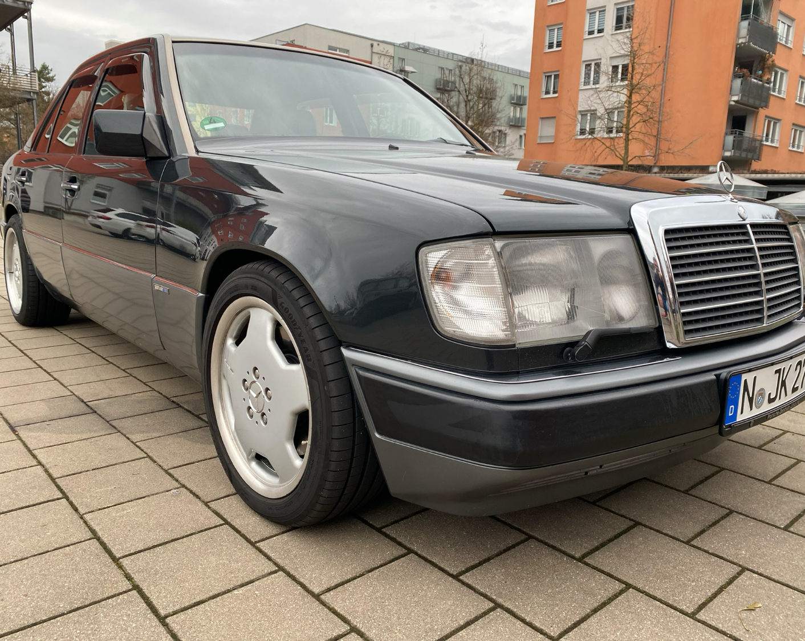 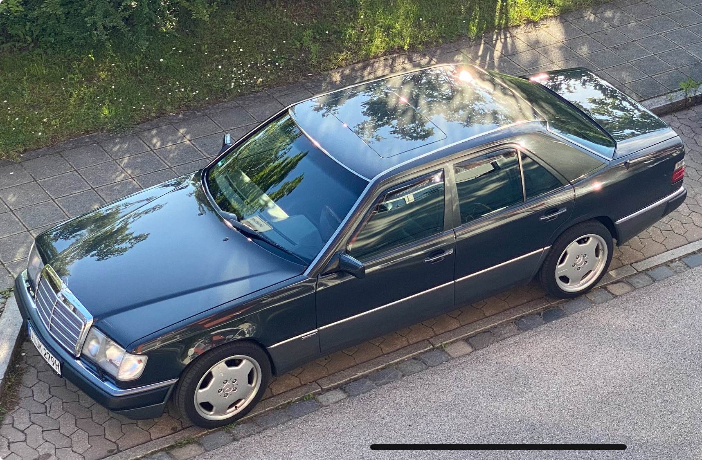{kind=link}
{kind=link}
August 2023
Die erste große Ausfahrt steht an. Dreißig Jahre nach der Erstzulassung geht es nach Tirol. Was für eine Freude den Wagen auf der Autobahn zu bewegen. Das erhabene Gefühl jederzeit Reserven zu haben lässt einen zufrieden dahincruisen. Der Benz tut was man von ihm erwartet. Probleme sind keine aufgetreten. Ein tolles Erlebnis.
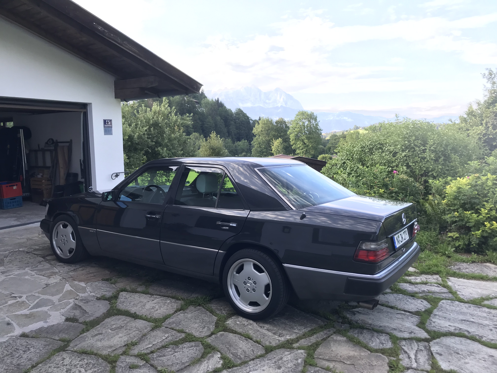 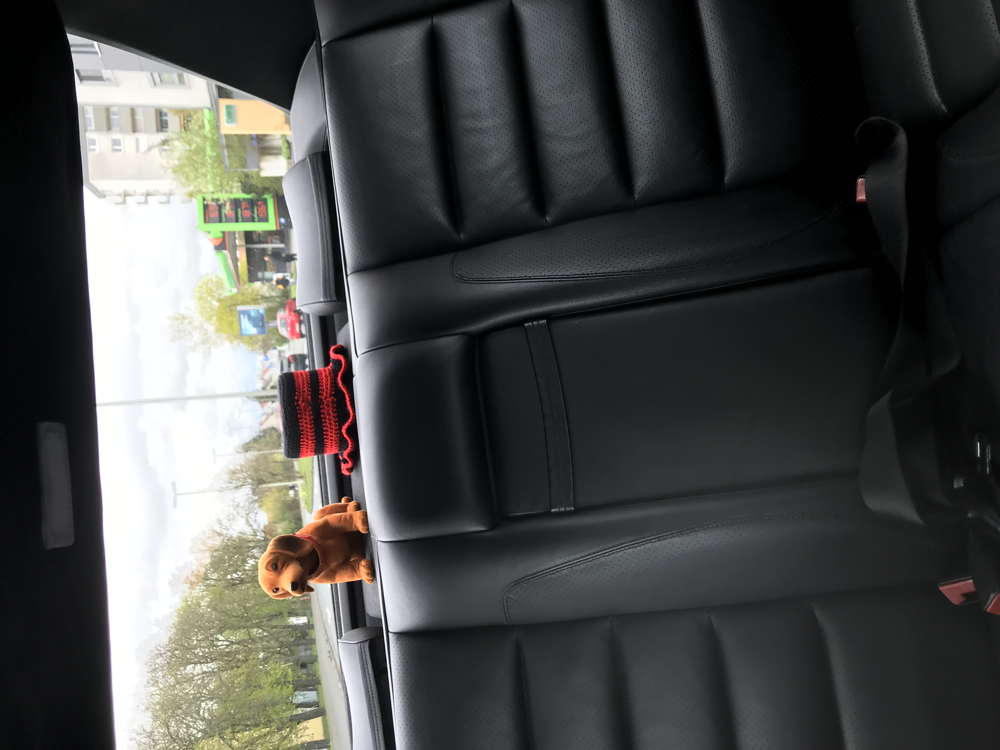{kind=link}
{kind=link}
September 2023
Endlich ist es so weit. Jetzt ist der 400er ein Oldtimer. Das H-Kennzeichen ist erteilt. Nebenbei, die TÜV Hauptuntersuchung erfolgte ohne Mängel!
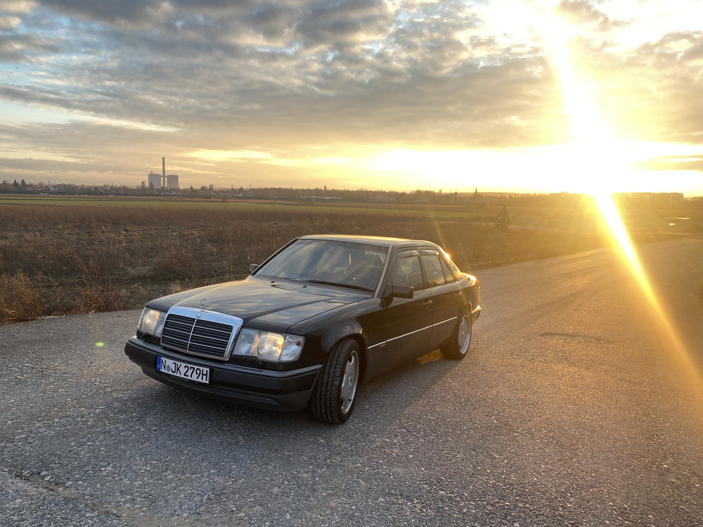 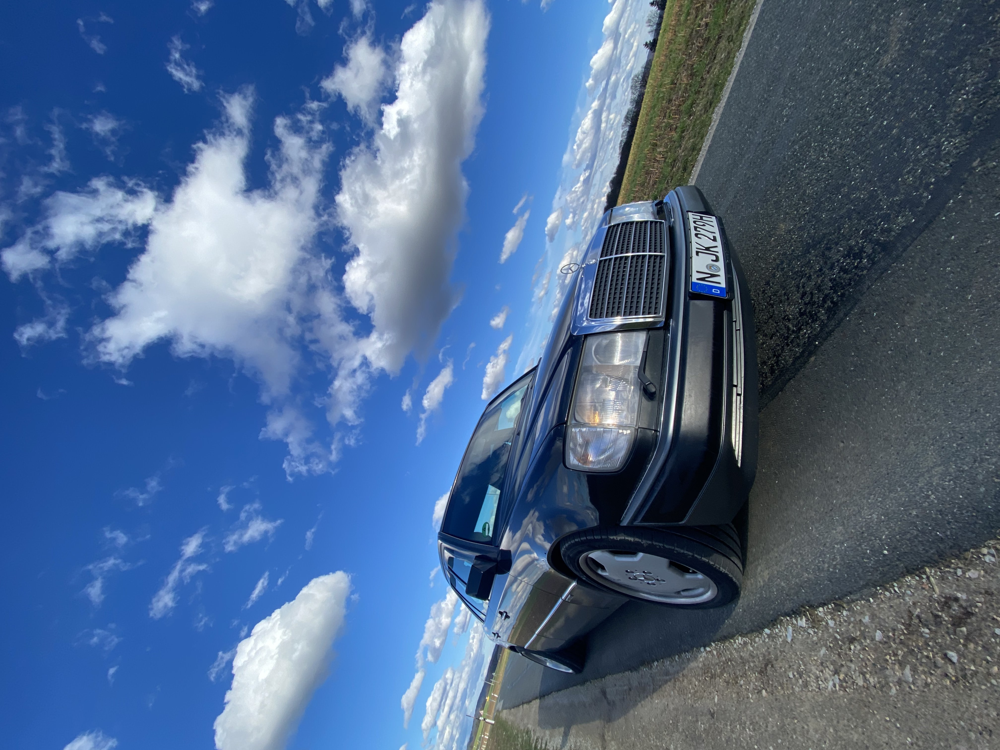 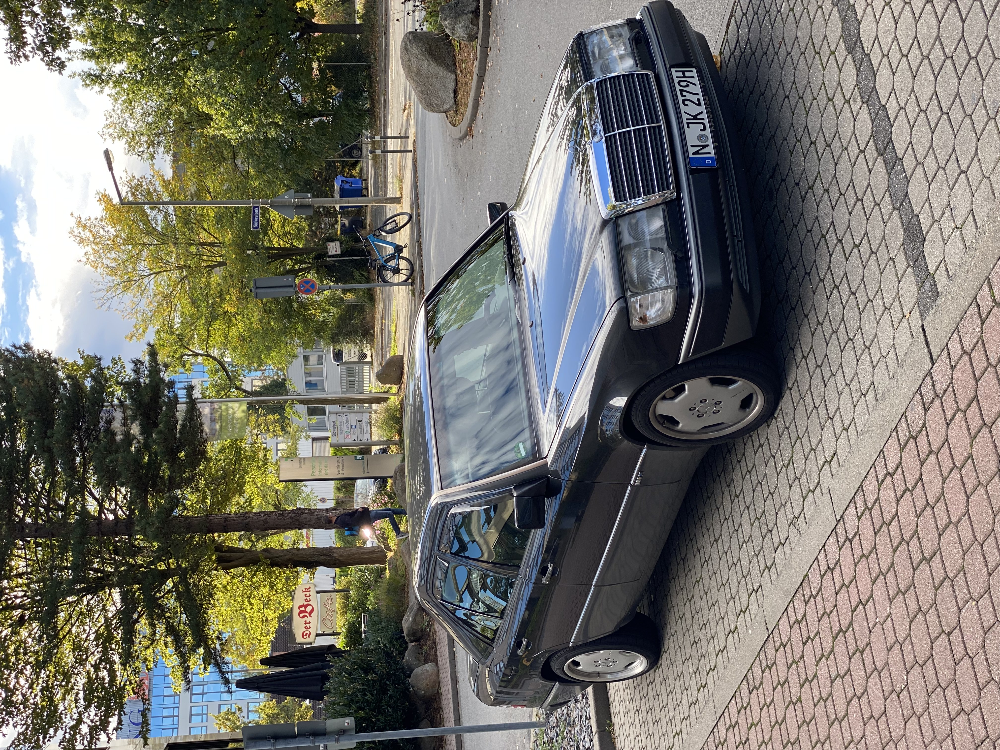{kind=link}
{kind=link}
{kind=link}
Mai 2024
Eine gemeinsame Ausfahrt mit einem W201 und einem R129 steht an. Ein riesiger Spaß. Der 8 Zylinder ist das führende Fahrzeug - versteht sich von selbst.
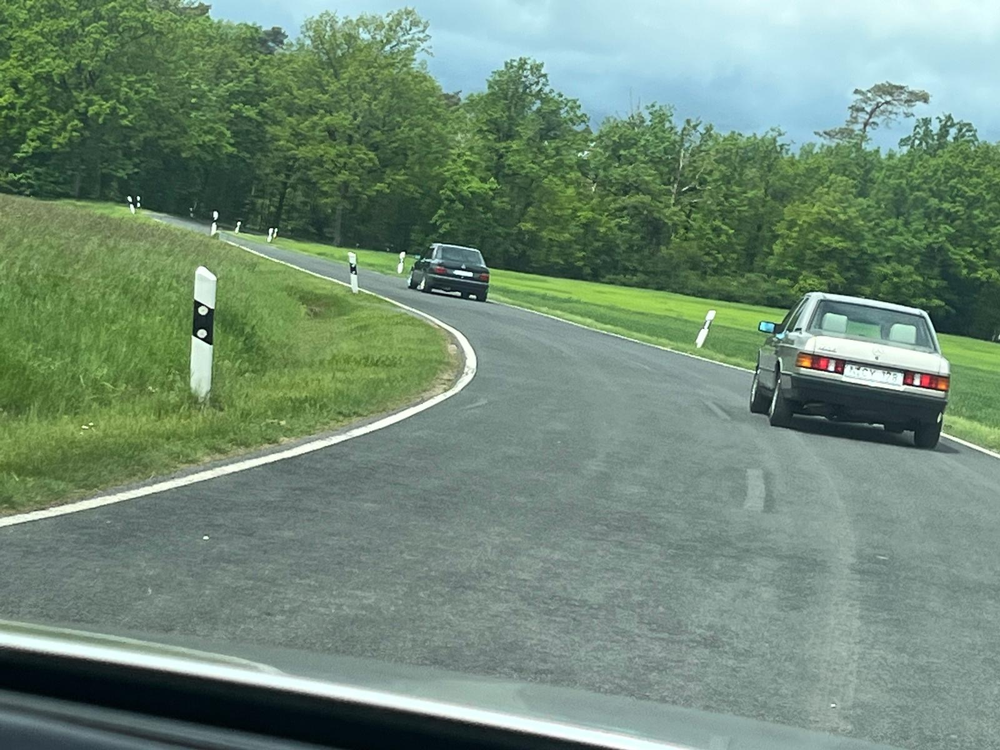 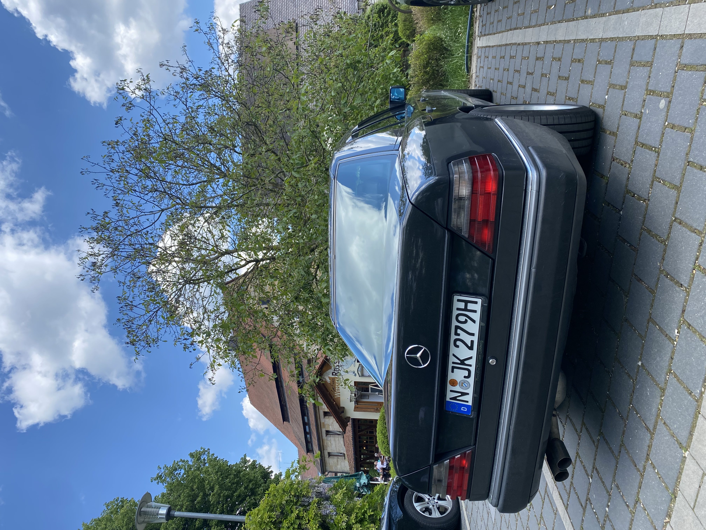 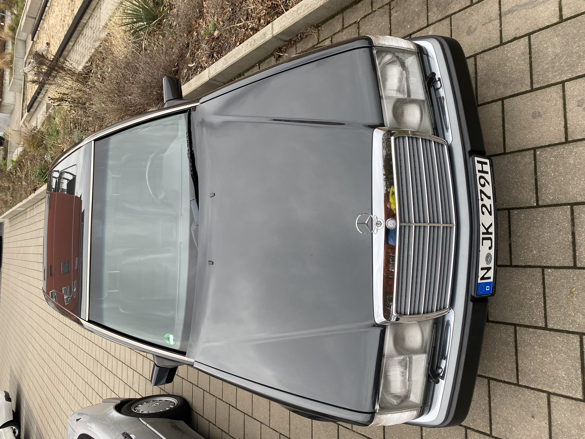{kind=link}
{kind=link}
{kind=link}
November 2024
Nachdem der Motor etwas unrund lief wurden Zündverteilerkappen, Verteilerläufer uns Abschirmdeckel sowie Zündkabelsatz und Zündkerzen erneuert.
Dezember 2024
Die Oldtimerbewertung bestätigt den außergewöhnlich guten Zustand ohne Vor- und Altschäden und vergibt die Note 2+. Der Marktwert wird mit 27.500,- € angegeben.
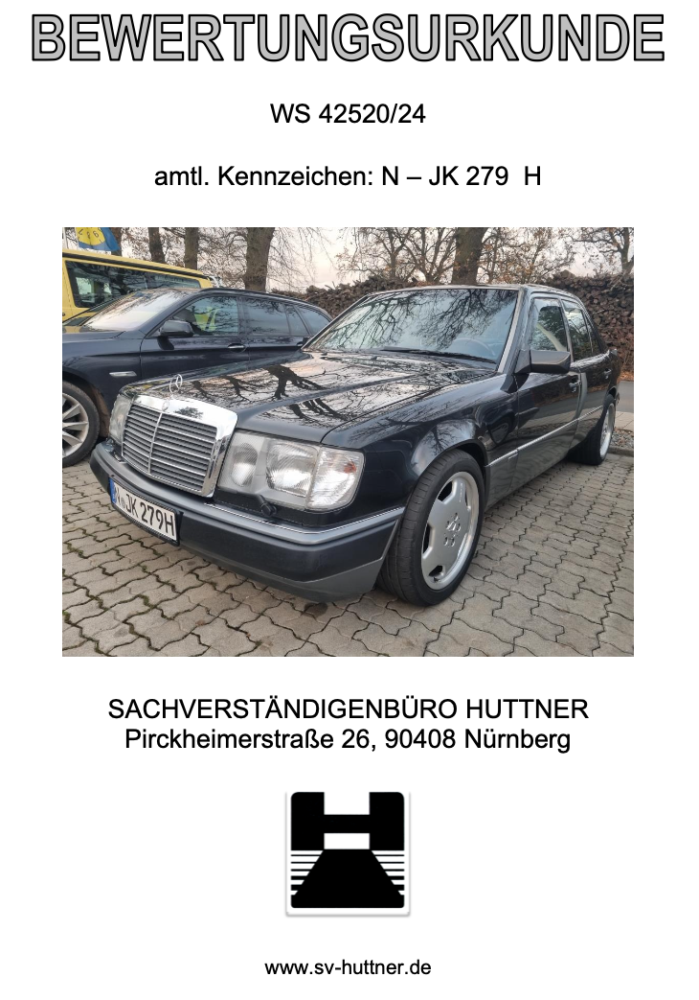